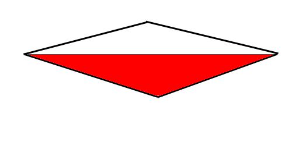
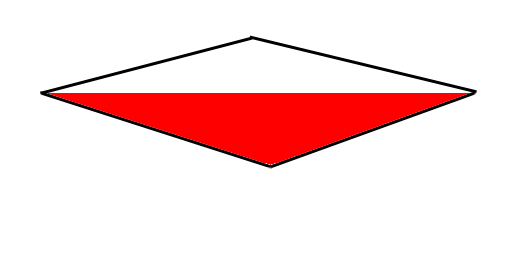
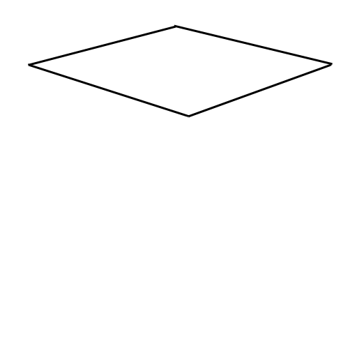
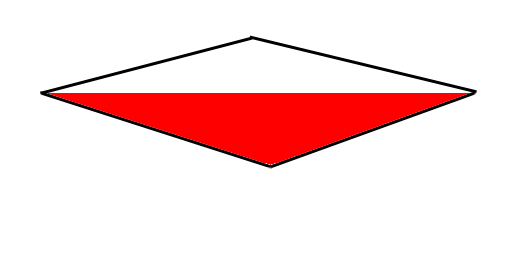

OpenGL Math Primer
Last Updated 10/05/14
OpenGL and 3D graphics in general is all based on vector and matrix math. Many institutions don't cover matrix math until after 3 levels of calculus which can be a huge obstacle for beginning graphics programmers. This is especially bad consdering much of the linear algebra you need to get a basic understanding of matrix transformations can be easily taught if you've taken high school level geometry.While this article won't cover all the math you need to become a proficient graphics programmer, it will give you flyover of linear algebra concepts so you have a basic understanding of what geometry based rendering APIs do.
Once you have a strong enough background in matrix math, go ahead and jump into the OpenGL tutorial set.
Vectors
Mathematical vectors (not to be confused with STL vectors) are a way to represent a value that has multiple components which can be used to represent something with a magnitude and a direction. The best way to understand what this means is by looking at an example.Here we have a point x = 2, y = 3. How do would you represent this as a vector? Like this:
That's it really. A vector is really just a way to represent a value that has multiple components such as in this case where the position has an x and y component.
Polygons
Now how is this useful? See, in OpenGL (and most other 3D graphics APIs) pretty much everything this is rendered as a set of polygons. This begs the question "How do you represent a polygon in a computer?". Let's take this triangle:It can be represented as an array of points:

Which can be represented as an array of vectors:
Which can be used by OpenGL to create a polygon to render. This is important because in 3D graphics polygons are used to represent 3D objects:
A 3D model for a simple uncolored cube can just be a big array of numbers.
const float cubeModel =
{
//Front
-1.f, -1.f, 1.f,
1.f, -1.f, 1.f,
1.f, 1.f, 1.f,
-1.f, 1.f, 1.f,
//Back
-1.f, -1.f, -1.f,
1.f, -1.f, -1.f,
1.f, 1.f, -1.f,
-1.f, 1.f, -1.f,
//Top
-1.f, 1.f, 1.f,
1.f, 1.f, 1.f,
1.f, 1.f, -1.f,
-1.f, 1.f, -1.f,
//Bottom
-1.f, -1.f, 1.f,
1.f, -1.f, 1.f,
1.f, -1.f, -1.f,
-1.f, -1.f, -1.f,
//Left
-1.f, -1.f, -1.f,
-1.f, 1.f, -1.f,
-1.f, 1.f, 1.f,
-1.f, -1.f, 1.f,
//Right
1.f, -1.f, -1.f,
1.f, 1.f, -1.f,
1.f, 1.f, 1.f,
1.f, -1.f, 1.f
};
The code you see above has been used to render a cube for a simple demo. Each triplet of numbers represents a vector point and every set of 4 vectors represents the 4
corners of a side of a cube.
Another important thing to note is which way is positive for the x, y, and z directions. For x, right is positive and left is negative. Up is positive and down is negative for the y axis. Finally for the z axis if you were staring at point , towards you is postive z and away from you is negative z. This is the most commonly used convention called the Right Hand Rule.
All we did here was take the first component from the first vector (5), then take the first component from the second vector (7), and add them together to get the first component from the result vector (5 + 7 = 12). For the second component we take the second component from the first vector (8), then take the second component from the second vector (1), and add them together to get the second component from the result vector (8 + 1 = 9). Finally for the third component, we take the third component from the first vector (3), then take the third component from the second vector (2), and add them together to get the third component from the result vector (3 + 2 = 5).
For vector subtraction, all we do is component by component subtraction: - =
Multiplication is a bit more tricky as there's more than one way to do it. The first way is called scalar multiplication where you multiply the entire vector by a single value. Say we wanted to double the length of a vector (or scale it to double the length), you would multiply the vector by two:
As you can see all we did was multiply each component in the vector by the scalar value.
We can also multiply two vectors together in multiple ways. The first way is by the dot product where you multiply the two vectors together component by component and then add the components together:
They also call the dot product the scalar product because it returns a single component value AKA a scalar. This calculation is useful in lighting calculations, collision detection, and other game programming problems.
Another way to multiply two vectors is the cross product. Assuming the first vector is A and the second vector is B then the cross product is:
Here's a super simple example:
The cross product gives you a vector perpendicular to both the vectors you multiplied. It's also important to note that AxB is not equal to BxA. BxA gives a vector in the opposite direction of AxB.
I wish we could spend more time covering how the dot and cross product are used, but this is just a quick fly over of the concepts. What we really want to get to is matrix vector multiplication.
Here's a 4 row by 4 column matrix:
Now say we wanted to multiply this matrix against this vector:
What we would do is split up the matrix into 4 vectors:
Take each of the components from the vector and scalar multiply them against the split matrix:
=
And then add them across to get the result vector:
Say we then multiply these vectors against this matrix:
This means we get
As you probably noticed, multiplying the vectors of the square against this matrix scaled it to double the size. This is why this matrix is known as the Scaling Matrix. If you look in the OpenGL documentation, you'll find out that the function glScale() uses a 4 row, 4 column version of this matrix.
And this is the key point of this article: OpenGL uses matrices to transform the vectors of 3D objects to render them to the screen. Now let's look at another matrix:
Watch what happens when we multiply this variable vector against it:
Whatever you multiply against this matrix, you get right back. When you have a square matrix with all zeros except for 1 going against the diagonal, this is called the Identity Matrix. It's used in graphics programming whenever you want to reset the transformation matrix.
Say if you wanted to shift a vector 5 to the right, 2 up, and 3 forward. There's a matrix for that:
Multiplying this through we get:
This matrix that shifts vectors in a linear direction is called the Translation Matrix. Sure enough it's what OpenGL uses in the glTranslate() function. You may be wondering where that 4th value in the vector came from. Sometimes it's called the w values, sometimes it's called the s value. Just know that it's usually set to 1 and that it's useful in cases like multiplying against the transformation matrix.
There are other useful matrices like the rotation matrix. You can look up how those function in the OpenGL 2.1 documentation.
To multiply them take the matrix on the right and split it into vectors:
And then take each of these column vectors and multiply them against the matrix on the left
Finally, put all the vectors back together and you'll get the resulting matrix.
An important thing to note is that matrix multiplication is not communitive. In algebra, x * y = y * x, but in matrix multiplication that isn't true. Watch what happens when we switch the order of the matrices.
When multiplying matrices, order matters. This is why left multiplying and right multiplying get you different results.
Multiplying two matrices together can be used combine tranformation effects. Say you wanted to take an object and translate 200 pixels right/down and then rotate it around it's center. You would create the matrix for this by taking a translation matrix and right multiplying the rotation matrix to get this result:
However if you were to take a rotation matrix first and then right multiply the translation matrix, you'd get a different result. Since you rotated first, when you multiply the translation matrix its coordinate will be rotated:
In OpenGL 2.1 there are built in matrix operations like glTranslate(), glRotate(), etc. The operations right multiply your current matrix, so make sure you watch the order you do your multiplication or you'll get undesired results.
Remember back to high school art class and those perspective scenes they made you do?
What OpenGL does is take a projection matrix and multiply the vector points from your polygon to transform them into perspective coordinates that OpenGL can use. Here we're taking the top part of the cube and transforming the square into perspective:
Then OpenGL connects your polygon vectors
And starts filling in the pixels (this is called rasterization) 

Obviously, there's more to the OpenGL pipeline with things to control texturing, coloring, lighting, etc. In terms of how we get from geometry to pixels, all OpenGL does is take vector coorindates and multiplies them against a perspective matrix.
If you managed to understand this article, I recommend picking up a book on Linear Algebra to make sure you have a strong foundation in matrix math. You'll need it if you plan to be a graphics programmer.
3D Vectors
While you know what x/y coordinates in 2D space are, you may be wondering how 3D space works. In the code for the cube model above, the third number of every position triplet is the z position. Where the X position goes left/right and the y position goes up/down, the z position goes forward/back.Another important thing to note is which way is positive for the x, y, and z directions. For x, right is positive and left is negative. Up is positive and down is negative for the y axis. Finally for the z axis if you were staring at point , towards you is postive z and away from you is negative z. This is the most commonly used convention called the Right Hand Rule.
Vector Arithmetic
3D graphics is all about taking vectors from models and performing mathmatical operations on them to get them to render to the screen. It is possible add/subtract vectors. All you have to do is add/subtract them component by component. For example:
+
=
All we did here was take the first component from the first vector (5), then take the first component from the second vector (7), and add them together to get the first component from the result vector (5 + 7 = 12). For the second component we take the second component from the first vector (8), then take the second component from the second vector (1), and add them together to get the second component from the result vector (8 + 1 = 9). Finally for the third component, we take the third component from the first vector (3), then take the third component from the second vector (2), and add them together to get the third component from the result vector (3 + 2 = 5).
For vector subtraction, all we do is component by component subtraction: - =
Multiplication is a bit more tricky as there's more than one way to do it. The first way is called scalar multiplication where you multiply the entire vector by a single value. Say we wanted to double the length of a vector (or scale it to double the length), you would multiply the vector by two:
=
=
As you can see all we did was multiply each component in the vector by the scalar value.
We can also multiply two vectors together in multiple ways. The first way is by the dot product where you multiply the two vectors together component by component and then add the components together:
.
= 5*7 + 8*1 + 3*2 = 35 + 8 + 6 = 49
They also call the dot product the scalar product because it returns a single component value AKA a scalar. This calculation is useful in lighting calculations, collision detection, and other game programming problems.
Another way to multiply two vectors is the cross product. Assuming the first vector is A and the second vector is B then the cross product is:
Here's a super simple example:
x
=
=
The cross product gives you a vector perpendicular to both the vectors you multiplied. It's also important to note that AxB is not equal to BxA. BxA gives a vector in the opposite direction of AxB.
I wish we could spend more time covering how the dot and cross product are used, but this is just a quick fly over of the concepts. What we really want to get to is matrix vector multiplication.
Matrix/Vector Multiplication
At the center of graphics programming is the graphics pipeline. A pipeline is a machanism designed to process a stream of data and OpenGL pipelines are based around multiplying a stream of vectors (like the vector positions in a 3D model) against a matrix or set of matrices.Here's a 4 row by 4 column matrix:
Now say we wanted to multiply this matrix against this vector:
x
What we would do is split up the matrix into 4 vectors:
Take each of the components from the vector and scalar multiply them against the split matrix:
=
And then add them across to get the result vector:
=
Transformation Matrices
Now how is this all useful? Recall that 3D models can be represented as an array of vectors. Using a matrix you can multiply the vectors to transform the 3D model. Say we have these 4 vectors used to represent a square:Say we then multiply these vectors against this matrix:
This means we get
=
=
=
=
=
=
=
As you probably noticed, multiplying the vectors of the square against this matrix scaled it to double the size. This is why this matrix is known as the Scaling Matrix. If you look in the OpenGL documentation, you'll find out that the function glScale() uses a 4 row, 4 column version of this matrix.
And this is the key point of this article: OpenGL uses matrices to transform the vectors of 3D objects to render them to the screen. Now let's look at another matrix:
Watch what happens when we multiply this variable vector against it:
=
Whatever you multiply against this matrix, you get right back. When you have a square matrix with all zeros except for 1 going against the diagonal, this is called the Identity Matrix. It's used in graphics programming whenever you want to reset the transformation matrix.
Say if you wanted to shift a vector 5 to the right, 2 up, and 3 forward. There's a matrix for that:
Multiplying this through we get:
=
This matrix that shifts vectors in a linear direction is called the Translation Matrix. Sure enough it's what OpenGL uses in the glTranslate() function. You may be wondering where that 4th value in the vector came from. Sometimes it's called the w values, sometimes it's called the s value. Just know that it's usually set to 1 and that it's useful in cases like multiplying against the transformation matrix.
There are other useful matrices like the rotation matrix. You can look up how those function in the OpenGL 2.1 documentation.
Matrix/Matrix Multiplication
Another important matrix math operation is multiplying two matrices together. Say we want to multiply these two matrices together:To multiply them take the matrix on the right and split it into vectors:
And then take each of these column vectors and multiply them against the matrix on the left
=
=
=
=
=
=
=
Finally, put all the vectors back together and you'll get the resulting matrix.
An important thing to note is that matrix multiplication is not communitive. In algebra, x * y = y * x, but in matrix multiplication that isn't true. Watch what happens when we switch the order of the matrices.
=
When multiplying matrices, order matters. This is why left multiplying and right multiplying get you different results.
Multiplying two matrices together can be used combine tranformation effects. Say you wanted to take an object and translate 200 pixels right/down and then rotate it around it's center. You would create the matrix for this by taking a translation matrix and right multiplying the rotation matrix to get this result:
However if you were to take a rotation matrix first and then right multiply the translation matrix, you'd get a different result. Since you rotated first, when you multiply the translation matrix its coordinate will be rotated:
In OpenGL 2.1 there are built in matrix operations like glTranslate(), glRotate(), etc. The operations right multiply your current matrix, so make sure you watch the order you do your multiplication or you'll get undesired results.
3D Objects to 2D Images
You may be wondering how we take these vectors of a model and turn them into 2D images we can see on the screen. Say we have this cubeRemember back to high school art class and those perspective scenes they made you do?
What OpenGL does is take a projection matrix and multiply the vector points from your polygon to transform them into perspective coordinates that OpenGL can use. Here we're taking the top part of the cube and transforming the square into perspective:
Then OpenGL connects your polygon vectors

And starts filling in the pixels (this is called rasterization)
Obviously, there's more to the OpenGL pipeline with things to control texturing, coloring, lighting, etc. In terms of how we get from geometry to pixels, all OpenGL does is take vector coorindates and multiplies them against a perspective matrix.
Conclusion
There is a lot more to the math it takes to understand 3D graphics. There's even more math required to make 3D games. Hopefully at least now those of you stuck taking Algebra II can get started using OpenGL and not be totally confused when we talk about vectors and matrices.If you managed to understand this article, I recommend picking up a book on Linear Algebra to make sure you have a strong foundation in matrix math. You'll need it if you plan to be a graphics programmer.